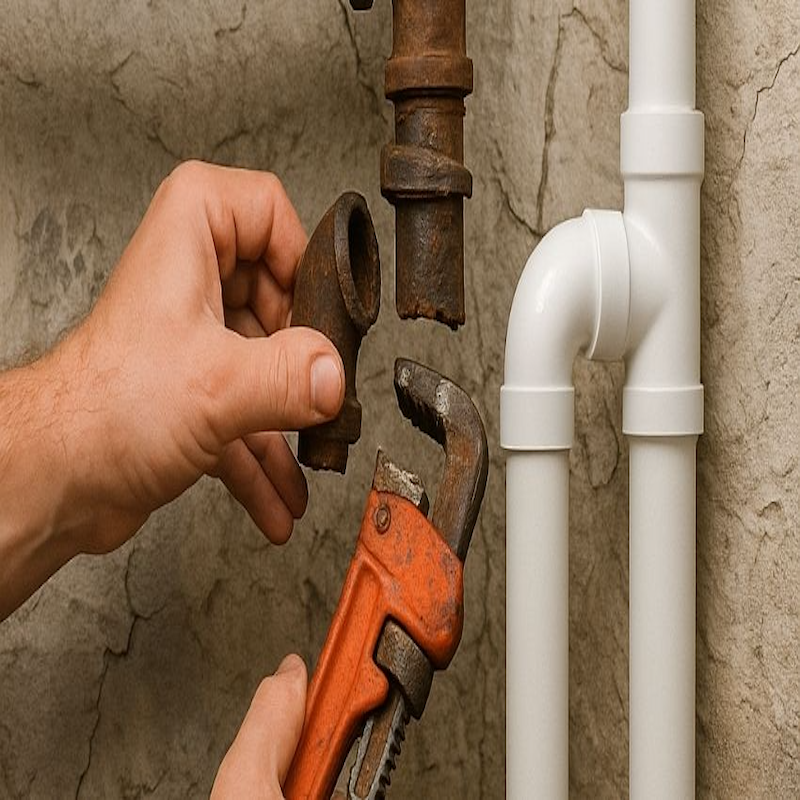
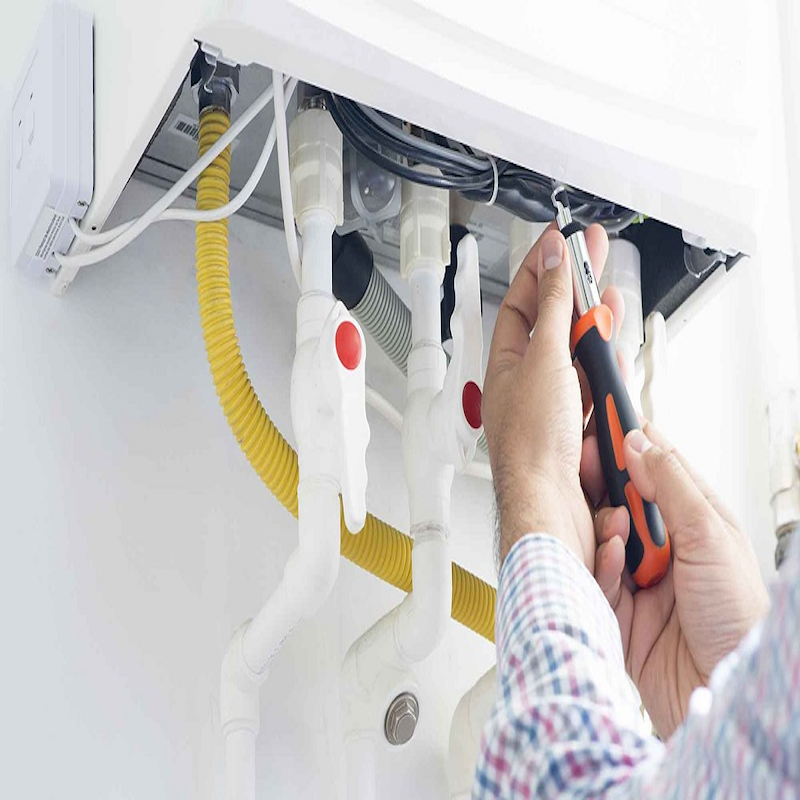
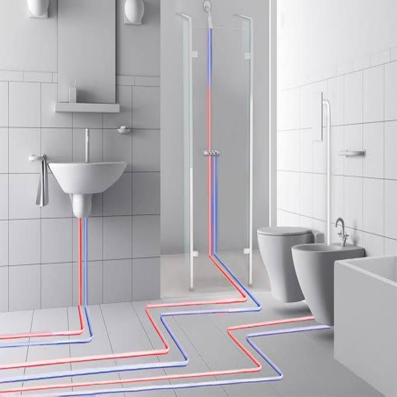
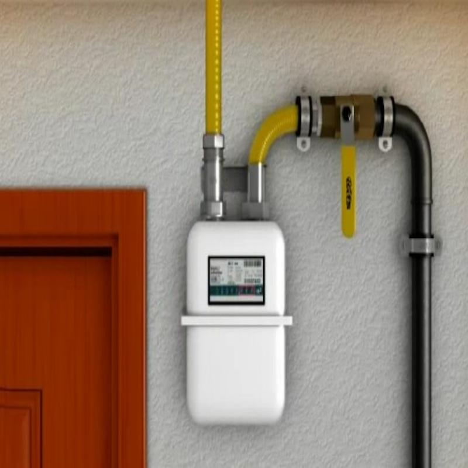
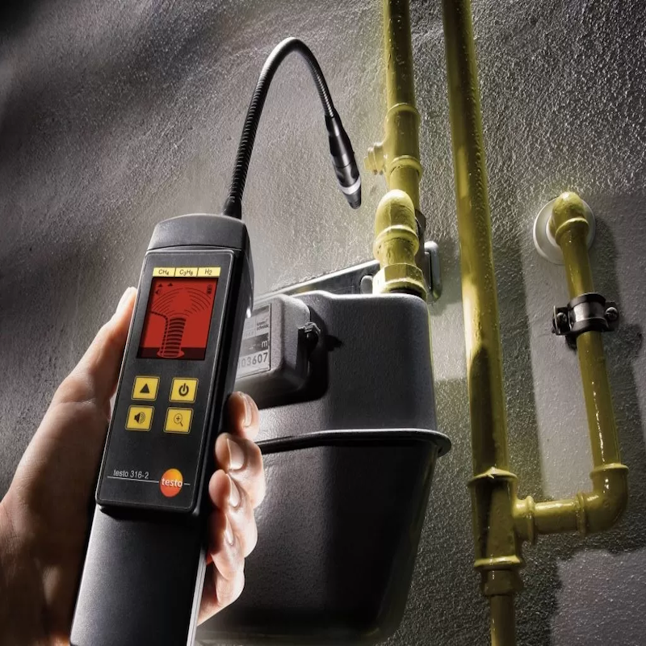
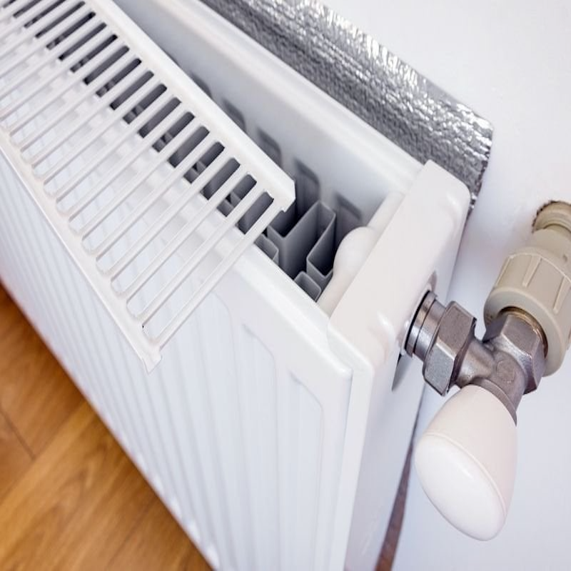

Temiz Su Tesisatı
Ev ve iş yerleriniz için hijyenik, sızdırmaz ve uzun ömürlü temiz su boru hatlarının kurulumu ve kaçak tamiri.
- PPRC & galvaniz boru tesisatı
- Su kaçağı tespiti ve onarımı
- Mutfak & banyo yenileme

Diyarbakır Kayapınar ve çevresinde temiz su, doğalgaz ve kalorifer sistemleriniz için garantili kurulum, bakım ve onarım hizmeti. Su kaçağı, tıkanıklık, kombi ve petek sorunlarında hızlı ve kalıcı çözümler sunuyoruz.
Ev ve iş yerleriniz için temiz su, atık su, doğalgaz ve ısıtma sistemlerinde A’dan Z’ye profesyonel tesisat çözümleri sunuyoruz.
Ev ve iş yerleriniz için hijyenik, sızdırmaz ve uzun ömürlü temiz su boru hatlarının kurulumu ve kaçak tamiri.
Tıkanıklık açma, pimaş döşeme ve kötü koku oluşumunu engelleyen profesyonel atık su gideri onarımları.
Güvenlik standartlarına tam uyumlu, sızdırmazlık garantili doğalgaz boru çekimi ve proje uygunluk kontrolleri.
Maksimum enerji verimliliği sağlayan petek montajı, kalorifer tesisatı kurulumu ve periyodik petek temizliği.
Can Tesisat olarak Diyarbakır Kayapınar ve çevre ilçelerde, sıhhi tesisat, doğalgaz ve ısıtma sistemleri alanında 15 yılı aşkın tecrübemizle hizmet veriyoruz. Amacımız, ev ve iş yerlerinizde uzun ömürlü, güvenli ve konforlu tesisat çözümleri sunmaktır.
Her işimizi, kendi evimizde yapıyormuş gibi özenle planlıyor, kaliteli malzeme ve profesyonel işçilikle uyguluyoruz. Tüm işlerimizde işçilik garantisi ve gerektiğinde faturalı hizmet sunuyoruz.
Tesisat problemleri zaman kaybına ve maliyete yol açmadan, ilk müdahalede doğru şekilde çözülmelidir. Can Tesisat olarak sizi yormayan, şeffaf ve çözüm odaklı bir hizmet anlayışı benimsiyoruz.
Kayapınar ve merkez ilçelerde çağrılarınızda en kısa sürede adresinize ulaşıp sorunu yerinde çözüyoruz.
Yaptığımız her işin arkasındayız. İşçilik kaynaklı sorunlarda ücretsiz müdahale ve destek sağlıyoruz.
Önceden bilinen, sürpriz çıkarmayan şeffaf fiyatlandırma politikası ile bütçenizi zorlamayan çözümler sunuyoruz.
Diyarbakır ve çevresinde sunduğumuz sıhhi tesisat, doğalgaz ve kalorifer hizmetleri. Yaptığımız her işin arkasındayız.






Daha fazla referans ve detaylı bilgi için bizimle iletişime geçebilirsiniz.
WhatsApp'tan Fotoğraf Gönderin, Fiyat VerelimTesisat sorunlarınız için beklemeyin. Form doldurmakla uğraşmayın, doğrudan bizi yazın veya arayın. Haftanın her günü 08:00 - 19:00 arası hizmetinizdeyiz.
Tüm su kaçağı, tıkanıklık, doğalgaz ve kalorifer sorunlarınızda direkt ustayla görüşün.
0530 412 21 01
Sorununuzun fotoğrafını veya konumunuzu hızlıca gönderin, en uygun çözümü birlikte belirleyelim.
Genellikle birkaç dakika içinde geri dönüş sağlıyoruz.
Diclekent ve Kayapınar başta olmak üzere Diyarbakır genelinde yerinde keşif ve servis hizmeti veriyoruz.
Diclekent, 268. Sk. Hevidar-1 Sitesi B-Blok No: 4B iç Kapı No: K, 21070 Kayapınar/Diyarbakır